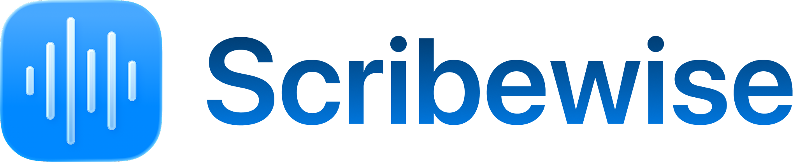
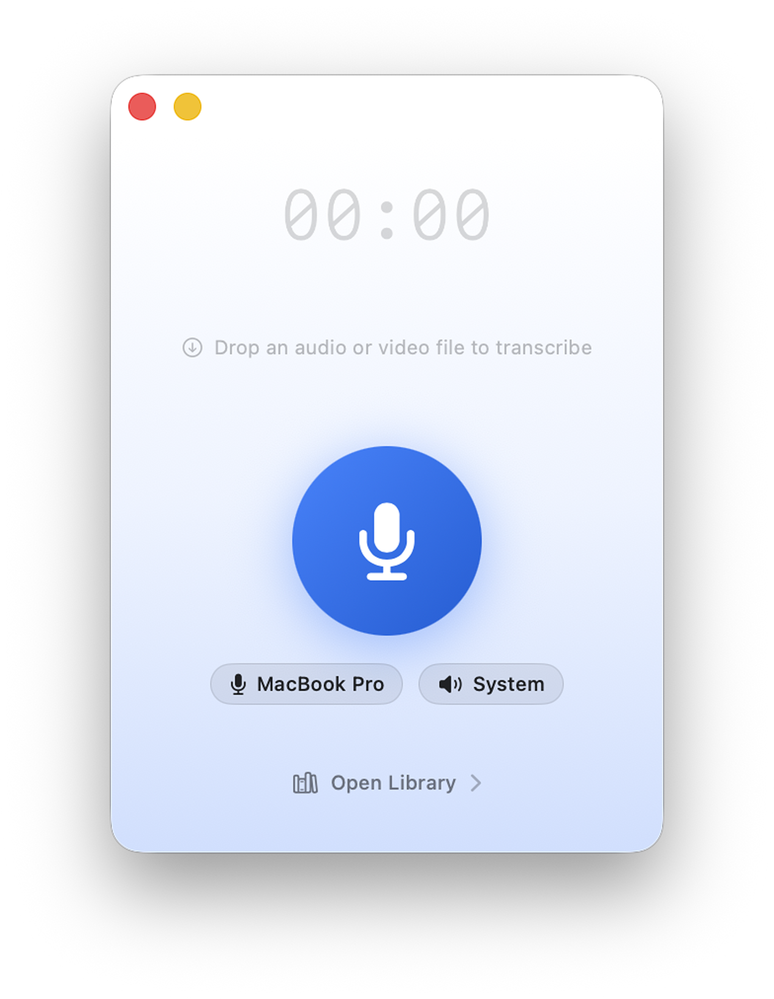
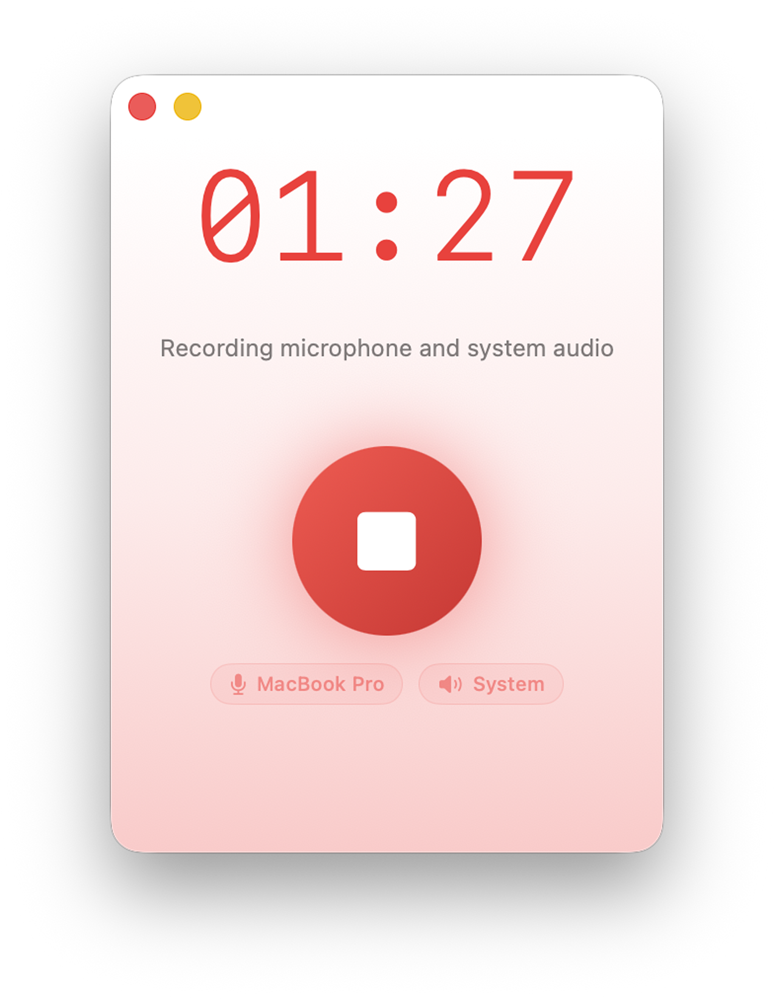
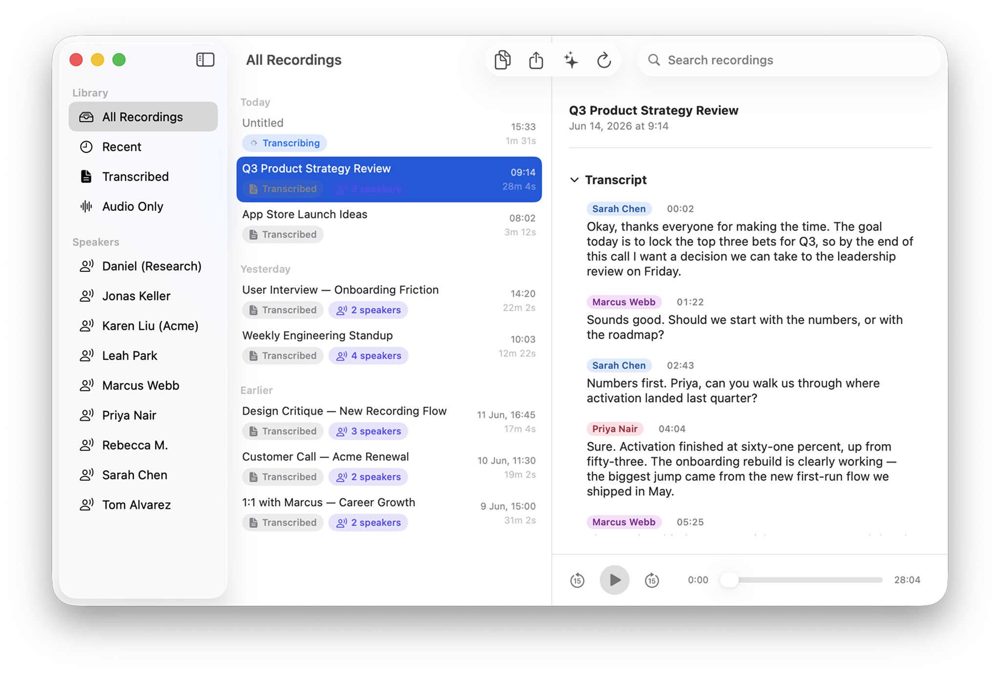
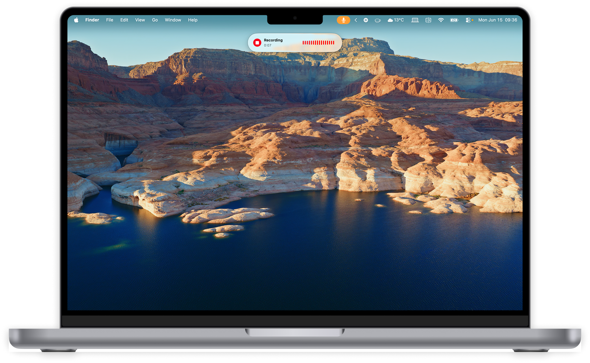

DownloadScribewise captures your microphone and your computer's audio, turns it into an accurate transcript, and writes you a clean summary. Nothing ever leaves your Mac.
Free. Requires macOS 15 (Sequoia) or later on Apple Silicon.



